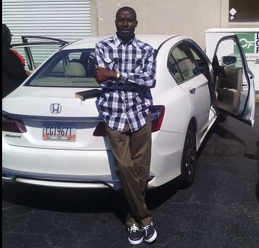

A MANUFACTURING & MECHANICAL ENGINEERING SPECIALIST;
A SOFTWARE ENGINEER (IN-TRAINING);
&
A HIGH PRIEST OF THE ORDER OF THE CREATOR (KH-RE-I'TTAOO) GODS.
An Astute believer in the principles of teamwork and collaboration of genuine diverse minds;
Hopeful of being integral in the team that will make the next great leap in the integration and evolution of the human-machine interface......
Getting ready to join that unique team that is prepared to collaboratively start thinking deeper into all posibilities, and keep trying harder and harder towards the break-throughs, and unstoppably continue working smarter as a team to save the earth and her humanoid race;
As he has as part of philosophy that whatever a man's imagination can conceptualise, surely that his hands can be able to bring to reality in a matter of time, some trys and perhaps many failures, so everything we can imagine is possible, only time makes it a reality!